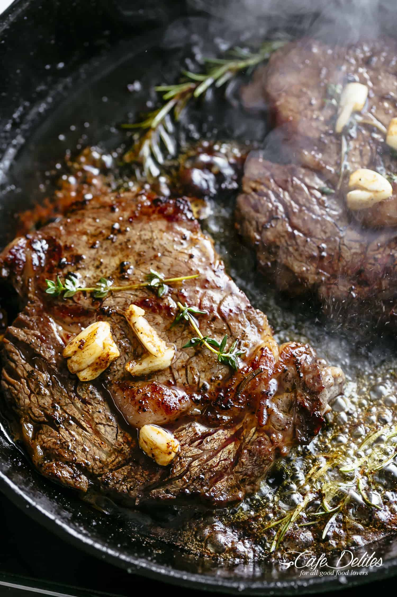

Juicy Steak

Description
A simple but delicious steak. Seared and crispy on the outside, rare and juicy on the inside. Only requires butter, salt, pepper, and fresh garlic.
Ingredients
- Fresh cut of steak with decent marbling
- Salt
- Black Pepper
- Butter
- Fresh Garlic
Steps
- Turn heat on high and allow cast iron to soak up heat as evenly as possible, occasionally shifting pan slightly
While cast iron is heating:
- Grab steak, sprinkle coarse sea salt or himalayan rock salt, and freshly ground pepper to taste on one side
- Repeat on other side
- Once pan is heated, add butter and turn heat to low-med. Add coarsely crushed garlic
- Once air above butter is "wavering", before butter smokes, add steak to cast iron
- There should be a healthy sizzle, but not too agressive, and it will calm down as the steak absorbs heat :-)
- If garlic in danger of burning, scoop it on top of the steak to let its flavor soak down into the steak
- After 1-3 minutes, steak should develop a nice crust and separate from pan effortlessly. Flip steak to other side
- Cook this side 2-4 minutes, waiting for equivalent crust
- With tongs, flip steak on narrow side and sear each side for ~1 minute each
- Interior at this point is probably in rare to medium-rare territory
- If desired, cover pan and set to low till steak reaches desired internal temp
- Remove steak and let rest on a plate a few minutes before serving